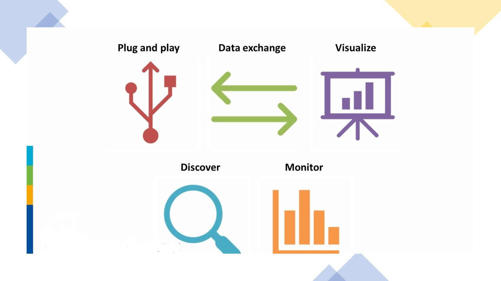

Overview¶
wis2box is a Python reference implementation of a WMO WIS 2.0 node. The project provides a plug and play toolset to ingest, process, and publish weather/climate/water data using standards-based approaches in alignment with the WIS 2.0 principles. In addition, wis2box also provides access to all data in the WIS 2.0 network, from other wis2box instances and global centres.
wis2box is designed to have a low barrier to entry for data providers, providing enabling infrastructure and services for data discovery, access, and visualization.
{kind=link}
Features¶
WIS 2.0 compliant: easily register your wis2box to WIS 2.0 infrastructure, conformant to WMO data and metadata standards
event driven or interactive data ingest/process/publishing pipeline
visualization of stations/data on interactive maps
discovery metadata management and publishing
download/access of data from WIS 2.0 network to your local environment
standards-based data services and access mechanisms:
robust and extensible plugin framework. Write your own data processing engines and integrate seamlessly into wis2box!
free and open source (FOSS)
containerized: use of Docker, enabling easy deployment